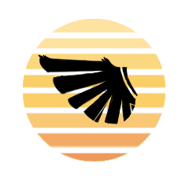

Note: This documentation is a WIP and may be missing important details.
Welcome to the official documentation of the SNS framework, a game development framework built in the Godot Engine. We recommend that you read the introduction section to get an overview of what this documentation has to offer.
The table of contents below should let you easily access the documentation for your topic of interest.
Welcome to the official documentation of the SNS framework, a game development framework built in the Godot Engine. The SNS framework was developed for the Sword and Sail game, but it quickly became a complex super-set of the Godot Engine, providing several tools for making complex narrative driven 3D games.
Using this framework requires prerequisite knowledge in Godot 4.3. There is a wealth of Tutorials and resources provided by the engines official Documentation that we recommend as a starting point.
In case you have trouble with one of the tutorials or your project, you can find help on our Discord server, various Community channels, the Godot Discord community and Forum.(Progressive Harmonised Optimised Engine for Networked Illumination & Xpression)
This section aims to list all the features currently supported by SNS.
Note:
This section lists features supported by the current stable version of SNS. Some of these features may change or may not be available in future versions of the framework.
Godot features will not be covered in this list.
PHOENIX (Progressive Harmonized Optimized Engine for Networked Illumination & Xpression) – A custom rendering system designed for optimised lighting, shading, and visual fidelity across environments.
Day and Night Cycle – A dynamic system that transitions between different times of day, affecting lighting, shadows, and ambient conditions.
Ocean Generation System – A procedural water system that simulates realistic ocean waves, buoyancy, and interactions with objects.
Compass navigation system – A navigation aid that helps players orient themselves within the game world using cardinal directions and markers.
Terrain tools – A set of tools for creating, modifying, and optimising terrain, including height maps, textures, and foliage placement.
Post Processing system – Enhances visual quality using effects like bloom, ambient occlusion, depth of field, and colour grading.
Debug camera – A free-move camera that allows developers to inspect the game world from any perspective.
Console command centre – A developer console that executes commands for debugging, testing, and modifying game variables in real time.
Runtime in-game editor – A system that allows live modifications to game objects, scripts, and variables without restarting the game.
Editor camera previews – Provides real-time previews of different in-game cameras to adjust angles and compositions efficiently.
Debug level collections – A set of pre-configured test environments for debugging mechanics, AI, and physics.
Cutscene system – A tool for creating and managing in-game cinematics, including camera movements, animations, and dialogue.
Character manager – Handles player and NPC entities, including animations, physics, and interactions.
State management – A framework for defining and transitioning between different character or AI behaviours.
Move component – A reusable movement system that manages character or object motion in 2D or 3D space.
Move input component – A component that processes player input and translates it into movement actions.
Interaction system – Governs how players interact with objects, NPCs, and the environment.
Inventory system – Manages player inventory, including item collection, usage, and storage.
Stats system – Tracks and updates player or NPC attributes like health, stamina, and experience.
Audio manager – Controls background music, sound effects, and spatial audio settings.
Breakable objects – Implements destructible objects with physics-based or scripted breaking mechanics.
Weather systems – Simulates different weather conditions such as rain, fog, and wind, affecting visuals and game-play.
Scene transition manager – Handles smooth transitions between game scenes, including loading screens and fades.
Inventory GUI manager – Controls the user interface for managing and displaying inventory items.
Inventory counter – A system for tracking and displaying item quantities in the inventory.
GUI transition manager – Handles animations and effects for seamless GUI transitions.
Health container – Displays the player’s health in the form of bars, hearts, or other indicators.
Interaction prompts – Provides on-screen prompts to guide player interactions with objects and NPCs.
Note:
Most of the systems here have documentation in engine using documentation comments. You can learn more about them by right clicking on a node and selecting "open documentation".
Warning:
Engine documentation is still a WIP depreciated methods and functions may have not been marked yet.